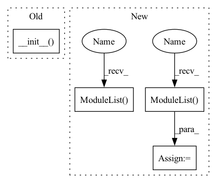

Pattern ID :13960
Before Change
env: ShardingEnv,
device: Optional[torch.device] = None,
) -> None:
super().__init__( module, table_name_to_parameter_sharding, env, None, device)
// pyre-ignore [3]
def input_dist(
self, ctx: ShardedModuleContext, features: KeyedJaggedTensorAfter Change
// pyre-fixme[24]: Non-generic type `nn.modules.container.ModuleList` cannot
// take parameters.
self._output_dists: nn.ModuleList[nn.Module] = nn .ModuleList()
self._embedding_names: List[str] = []
self._embedding_dims: List[int] = []
// pyre-fixme[24]: Non-generic type `nn.modules.container.ModuleList` cannot
// take parameters.
self._input_dists: nn.ModuleList[nn.Module] = nn.ModuleList()
self._feature_splits: List[int] = []
self._features_order: List[int] = []
// forward pass flow controlIn pattern: SUPERPATTERN
Frequency: 3
Non-data size: 4
Instances Fragment ID: 46447744
Project Name: pytorch/torchrec
Commit Name: cfc6c1ddab783b6f085f0d329bf9c7a933a10540
Time: 2022-02-12
Author: xingl@fb.com
File Name: torchrec/distributed/quant_embeddingbag.py
M Class Name: ShardedQuantEmbeddingBagCollection
N Class Name: ShardedQuantEmbeddingBagCollection
M Method Name: __init__(5)
N Method Name: __init__(5)
M Parent Class: Subscript
N Parent Class: Subscript
M File Name: torchrec/distributed/quant_embeddingbag.py
N File Name: torchrec/distributed/quant_embeddingbag.py
M Start Line: 57
M End Line: 57
N Start Line: 84
N End Line: 116
Before Change
env: ShardingEnv,
device: Optional[torch.device] = None,
) -> None:
super().__init__( module, table_name_to_parameter_sharding, env, None, device)
// pyre-ignore [3]
def input_dist(
self, ctx: ShardedModuleContext, features: KeyedJaggedTensorAfter Change
// pyre-fixme[24]: Non-generic type `nn.modules.container.ModuleList` cannot
// take parameters.
self._output_dists: nn.ModuleList[nn.Module] = nn.ModuleList()
self._embedding_names: List[str] = []
self._embedding_dims: List[int] = []
// pyre-fixme[24]: Non-generic type `nn.modules.container.ModuleList` cannot
// take parameters.
self._input_dists: nn.ModuleList[nn.Module] = nn.ModuleList()
self._feature_splits: List[int] = []
self._features_order: List[int] = []
// forward pass flow control Fragment ID: 46447745
Project Name: pytorch/torchrec
Commit Name: cfc6c1ddab783b6f085f0d329bf9c7a933a10540
Time: 2022-02-12
Author: xingl@fb.com
File Name: torchrec/distributed/quant_embeddingbag.py
M Class Name: ShardedQuantEmbeddingBagCollection
N Class Name: ShardedQuantEmbeddingBagCollection
M Method Name: __init__(5)
N Method Name: __init__(5)
M Parent Class: Subscript
N Parent Class: Subscript
M File Name: torchrec/distributed/quant_embeddingbag.py
N File Name: torchrec/distributed/quant_embeddingbag.py
M Start Line: 57
M End Line: 57
N Start Line: 84
N End Line: 116
Before Change
class MultiScaleSpectralDiscriminator(MultiScaleDiscriminator):
def __init__(self, multiscale_stft, n_discriminators, convnet) -> None:
super().__init__( n_discriminators, convnet)
self.multiscale_stft = multiscale_stft()
def forward(self, x):
scales = self.multiscale_stft(x)After Change
def __init__(self, scales: Sequence[int],
convnet: Callable[[], nn.Module]) -> None:
super().__init__()
self.specs = nn.ModuleList( [spectrogram(n) for n in scales])
self.nets = nn.ModuleList( [convnet() for _ in scales])
def forward(self, x):
features = []
for spec, net in zip(self.specs, self.nets): Fragment ID: 46447746
Project Name: caillonantoine/rave
Commit Name: 8d57b8a03b8c56aaa74f04d780018a9fb3922fab
Time: 2022-12-10
Author: caillon@ircam.fr
File Name: rave/discriminator.py
M Class Name: MultiScaleSpectralDiscriminator
N Class Name: MultiScaleSpectralDiscriminator
M Method Name: __init__(3)
N Method Name: __init__(4)
M Parent Class: nn.Module
N Parent Class: MultiScaleDiscriminator
M File Name: rave/discriminator.py
N File Name: rave/discriminator.py
M Start Line: 122
M End Line: 124
N Start Line: 135
N End Line: 139
Before Change
fused_params: Optional[Dict[str, Any]] = None,
device: Optional[torch.device] = None,
) -> None:
super().__init__(
module, table_name_to_parameter_sharding, env, fused_params, device
)
// Get all fused optimizers and combine them.
optims = []
for lookup in self._lookups:
for _, module in lookup.named_modules():After Change
// pyre-fixme[24]: Non-generic type `nn.modules.container.ModuleList` cannot
// take parameters.
self._output_dists: nn.ModuleList[nn.Module] = nn.ModuleList()
self._embedding_names: List[str] = []
self._embedding_dims: List[int] = []
// pyre-fixme[24]: Non-generic type `nn.modules.container.ModuleList` cannot
// take parameters.
self._input_dists: nn.ModuleList[nn.Module] = nn.ModuleList()
self._feature_splits: List[int] = []
self._features_order: List[int] = []
// forward pass flow control Fragment ID: 46447747
Project Name: pytorch/torchrec
Commit Name: cfc6c1ddab783b6f085f0d329bf9c7a933a10540
Time: 2022-02-12
Author: xingl@fb.com
File Name: torchrec/distributed/embeddingbag.py
M Class Name: ShardedEmbeddingBagCollection
N Class Name: ShardedEmbeddingBagCollection
M Method Name: __init__(6)
N Method Name: __init__(6)
M Parent Class: FusedOptimizerModule,Subscript
N Parent Class: FusedOptimizerModule,Subscript
M File Name: torchrec/distributed/embeddingbag.py
N File Name: torchrec/distributed/embeddingbag.py
M Start Line: 516
M End Line: 518
N Start Line: 254
N End Line: 286